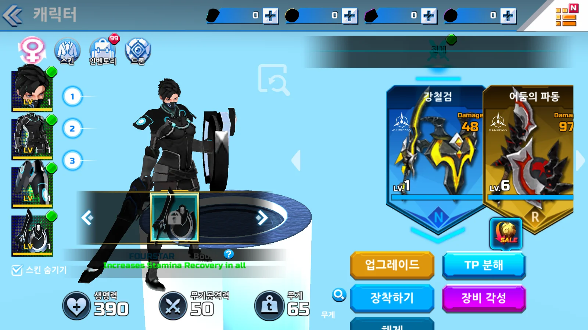
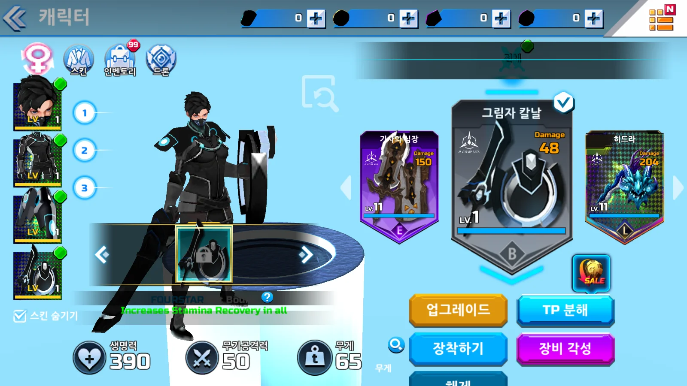
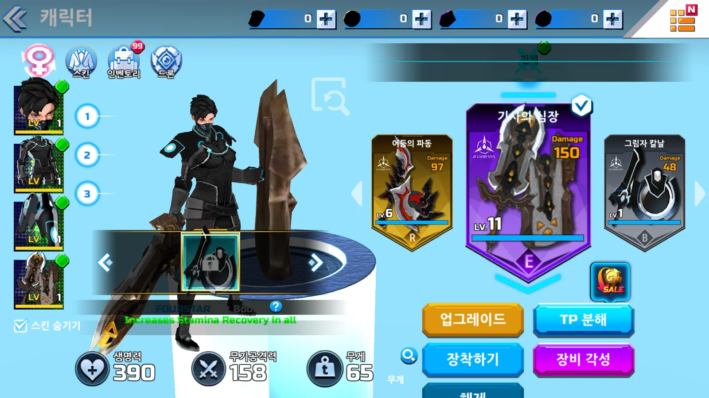

Tracefolio REPORTS & ISSUES
Tracefolio REPORTS & ISSUESOVERDOX 장비 캐러셀과 열람·장착 분리 복원
부분 완료원작 카드 간격210·중앙 정렬 강도16을 연결하고 열람과 장착을 분리했습니다. Build22 클릭·휠·장착을 확인했으며 OS 드래그는 미확인입니다.
작업 결과
원작 로비 직렬화 자료에서 UIGrid.cellWidth=210, UICenterOnChild.springStrength=16을 확인했습니다. 공개 원작 장비 화면과 비교해 중앙을 크게, 옆 카드를 작게 배치했습니다. 축소율0.65는 화면 대응값이며 원작 상수로 확인한 값이 아닙니다. 카드10개를 재사용하며 무기38종·방어구 각27종을 연결합니다.



장착 무기는 같지만 이전 화면은 목록 첫 항목을 표시했고 변경 후에는 장착 항목을 중앙에 표시합니다.

변경 내용
적용 내용
카드 클릭·휠·드래그 처리기는 Focus로 열람만 변경합니다. 별도 EquipFocused에서 세션에 장착 명령을 전달합니다. 원작 EquipmentListController의 별도 장착 버튼 구조에 맞췄습니다. 샘플 프로젝트 기준으로 수명주기 우선 배치, 조건문 블록, 한국어 XML 주석에 책임·좌표 기준·포인터 소유권을 기록했습니다. 기존 직렬화 필드명은 보존했습니다.
flowchart TD
A[카드 클릭·휠·드래그] --> B[Focus 열람 변경]
B --> C[고정 카드 풀 위치·크기 갱신]
D[장착 버튼] --> E[EquipFocused]
E --> F[세션 장비 변경]
F --> G[모델·공격력·표시 갱신]
private void UpdateLayout()
{
if (items == null)
{
return;
}
int center = items.Length / 2;
for (int index = 0; index < items.Length; index++)
{
int dataIndex = _focus + index - center;
var item = items[index];
item.gameObject.SetActive(dataIndex >= 0 && dataIndex < _count);
float distance = dataIndex - _position;
item.anchoredPosition = new Vector2(distance * cellWidth, 0);
item.localScale = Vector3.one * Mathf.Lerp(1, neighborScale, Mathf.Clamp01(Mathf.Abs(distance)));
}
}
public void OnDrag(PointerEventData data)
{
if (_pointer != data.pointerId || !TryGetPoint(data, out var point))
{
return;
}
// UI 로컬 좌표를 사용하므로 해상도나 Canvas 배율이 달라도 같은 카드 간격을 유지한다.
_position = Mathf.Clamp(_dragStartPosition - (point.x - _dragStartPoint.x) / cellWidth, 0, _count - 1);
owner.Focus(Mathf.RoundToInt(_position));
UpdateLayout();
}
검증
고정 Windows Build22를 Computer Use로 실행하여 클릭·휠 열람과 장착을 확인했습니다. 열람만으로 모델·공격력이 바뀌지 않았고 장착 버튼에서50→158, 원래 무기로 재장착하면50으로 돌아왔습니다. 전투 진입과 로비 복귀도 확인했습니다. Unity 실제 레이캐스트와 EventSystem의 beginDrag/drag/endDrag 재생에서는0→1 이동을 확인했습니다. OS 입력 드래그 자동 조작은 시작·종료 로그가 없어 미확인입니다. 두 검증을 같은 것으로 취급하지 않습니다.
Windows 확인 요약 · EventSystem 재생 · 공개 흐름 로그 · 고정 빌드 해시 목록 · 이미지 용량. 런타임 DLL SHA256 1D12B96AD95DC267D3FD919B66BF4E0EA3903057A39DDBE0392E5E5661AA33B0입니다. 실행 로그의 오류는0건이며 빌드에는 기존 원작 FX 누락 MonoBehaviour 경고1건이 남습니다.
보고용5장은 실제 Affinity 3.3.3 GUI에서1600×900 고품질 WebP로 내보냈습니다. 원본 PNG와 별도 AF5개를 보존하고 실제 닫기·재열기 후5개 모두 clean 상태를 확인했습니다. SDK 저장·내보내기는 PERMISSION_DENIED로 실패하여 GUI를 사용했고 보안 설정은 변경하지 않았습니다.
남은 사항
실제 OS 드래그, 원작 관성 곡선, 열람 중 캐릭터 미리보기,119개 전수 화면 점검, 미연결 메뉴·세부 UI가 남습니다. 이번 변경의10시간 검증은 수행하지 않았습니다. 모델은 새로 조형한 것이 아니라 보존된 원작 자산의 재연결입니다.
캐러셀 전체 소스 · 로비 제어 전체 · 카드 전체 · 에디터 연결·검증 전체 · 개발 문서. 전역 규칙 변경은 없으며 프로젝트 문서에 확인된 차이를 기록했습니다.
작업 시간
- 제안 시간: 2026-11-13 19:11:05 KST 시작. 캐러셀·사망 클립 구현과 첫 실행 확인40~60분 예상. 지속 목표는 중단 지시까지 유지합니다.
- 실제로 완료된 시간: 구현·Windows 실행 확인19:11:05~19:44:06 KST, 실측33분1초. 첫 컴파일19:23:37, Build22 런타임 DLL19:36:31, 수동 실행 확인 종료19:44:06 KST. 문서·공개 보고 작성 시간은 별도이며 전체 프로젝트 완료가 아닙니다.
- XERJ: 미사용 — XERJ는 연결 확인을 포함해 사용하지 않았습니다. 보존된 자료의 직렬화 필드, Unity API, 실제 Windows 실행 화면과 로그를 사용했습니다.